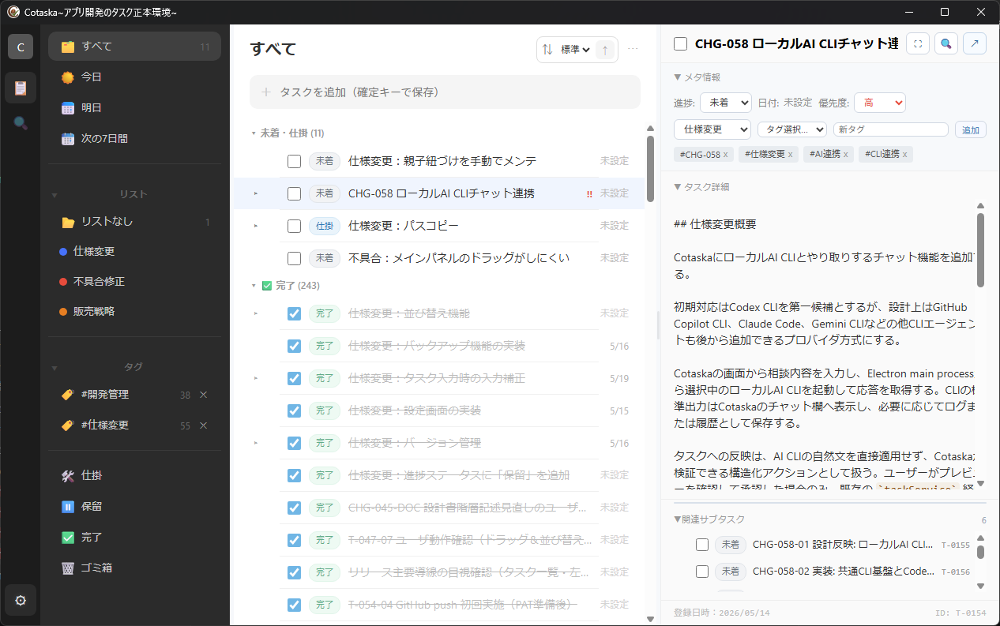

AIに要件を整理してもらう
完了 / Cotaska
Task manager for humans and AI agents
人とAIが同じタスクのやり取りができる、ローカル完結型タスク管理
Cotaskaは、AIコーディングやAIエージェントとの作業で散らかりがちなタスクを、人とAIが同じ形で読めるようにするWindows向けタスク管理アプリです。 人は画面で整理し、AIはタスク情報を読んで次の作業を把握できます。
ビュー
リスト
やりたいことをタスクとして追加
このタスクから設計書を作ってもらう
進行中 / AI活用
メール内容をタスクとして追加する
未着手 / 受信箱
Markdownタスク
AIも読める作業の前提
目的、背景、次にやることをタスクとして残す。人が確認し、AIにも渡しやすい作業メモになります。
Concept
人とAIのやり取りを、同じタスクの上で進める。
やりたいことがまだあいまいな段階でも、人はCotaskaにタスクとして残しておけます。 そのタスクをAIに読ませれば、目的を整理したり、作業を分解したり、次にやることを具体化してもらえます。
具体化されたタスクは、そのままAIへの作業指示の元になります。 「このタスクを読んで設計書を作って」「このタスクから実装して」のように、人が見ているタスクを基準にしてAIへ依頼できます。
メールやOutlookなどから拾った情報も、AIに整理してもらい、Cotaskaのタスクとして追加できます。 やることを会話ログやメールの中に散らばらせず、タスクとして一元管理できます。
人とAIが同じタスクを読める
人が画面で整理したタスクを、AIにも作業の前提として渡せます。説明し直す時間を減らし、同じ文脈で続きを進められます。
AI作業の状態を見失わない
依頼内容、分解した作業、次にやることをタスクとして残せます。会話ログだけに頼らず、作業状態を見返せます。
UIで普段のタスク管理ができる
今日、明日、次の7日間、リスト別の表示で日常のタスクを確認できます。AI用の仕組みでありながら、人も普通に使えます。
Markdownとして手元に残る
タスクはローカルのMarkdownとして残るため、あとから人が読み返しやすく、AIにも渡しやすい形になります。
Screen
実際のタスクを、人もAIも読める形で残す。
Cotaskaでは、タスク一覧、状態、タグ、詳細メモ、関連サブタスクをひとつの作業画面で確認できます。 人は画面で状況を把握し、AIには同じタスク情報を読ませて、整理・設計・実装の指示に使えます。

Human and AI workflow
整理、指示、追加を、同じタスクから始める。
Cotaskaは、人が整理する場所であり、AIに整理・実行・追加を頼むための共通のタスク置き場です。 あいまいなやりたいことをタスクにし、AIに分解してもらい、そのタスクを元に設計や実装を依頼できます。
Organize
AIに整理してもらう
やりたいことをタスクに残し、目的、背景、作業単位をAIに具体化してもらいます。
Request
AIへの指示元にする
「このタスクファイルを読んで設計書を作って」のように、同じタスクを作業指示に使えます。
Add
AIにタスクを追加してもらう
メールなどの情報をAIに整理してもらい、Cotaskaのタスクとして管理できます。
Local Markdown
作業の流れを、AIにも渡しやすい形で手元に残す。
data/
tasks/
T-0001.md
T-0002.md
_index.yaml
archive/
lists.yamlPositioning
UIで使えて、Markdownで残り、AIにも渡せる。
一般的なタスク管理
日々のタスク整理には便利です。ただ、AIに作業の続きを頼むとき、アプリ内の状態をそのまま共有しにくいことがあります。
Markdownメモ
AIに渡しやすく、自由に書けます。ただ、タスクの一覧、状態、期限、完了管理を日常的に回すには手間がかかります。
Cotaska
人は画面でタスクを整理し、AIは同じタスク情報を読めます。UIで使えるタスク管理と、Markdownとして残る作業記録を両立します。
Release
Windows向けポータブル版を公開中
ZIPを展開して Cotaska.exe を起動すると、そのまま使い始められます。 インストール不要のポータブル版です。